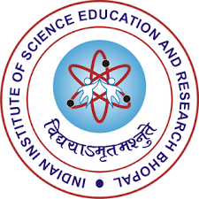

I am a third year Physics major at IISER Bhopal. I have previously worked on a project titled “Supernovae Neutrino and Neutrino Oscillations” under Prof. Naga Deepthi. Through this work, I built a strong foundation in Quantum Mechanics, got introduced to Quantum Field Theory (QFT), and explored the theoretical framework of the Standard Model which I expanded upon during a course under Dr. Rahul Shrivastava under whom I started working on Dark Matter(Particle) Phenomenology.
I am interested in Theoretical Physics mainly HEP (BSM and Particle Physics) and am fond of Mathematical Physics. Theories arising from only a few postulates attract me and thus I have worked on BSM Physics in past. I recently completed ICTP Riemannian and Complex Geometry Course with select other students and am thinking of working on Non Standard Neutrino Interactions in Near Future.

Bachelor of Science in Physics (3rd Year)
Pursuing a rigorous degree in physics with a focus on quantum mechanics, particle physics, and mathematical methods.